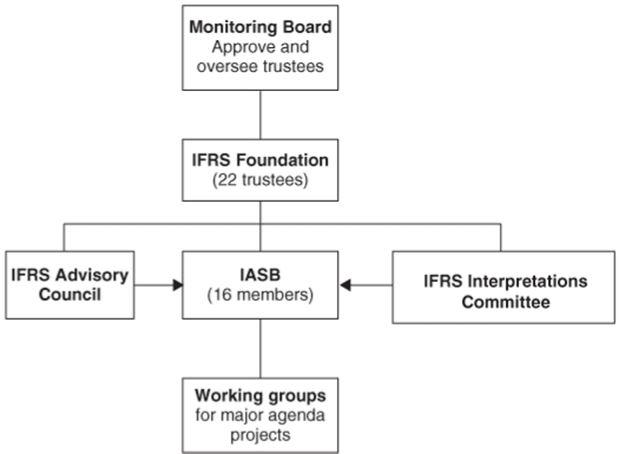

Les « datas » doivent-elles être mondialement régies par la sacro-sainte « propriété économique » du droit anglo-saxon ?
LES POSTULATS IDÉOLOGIQUES DE LA « PROPRIÉTÉ ÉCONOMIQUE »
Le concept de « propriété économique » a été longtemps très largement méconnu par le droit français et plus largement par le droit continental classique. La « propriété économique » est un concept de droit anglo-saxon, lequel droit s’est très largement développé autour de l’idée selon laquelle la vie en société est tout entière comprise dans des rapports de nature commerciale. Par essence, le droit anglo-saxon inverse la relation naturelle entre « politique » et « économique » en soumettant le premier au second. A l’inverse, le droit continental classique a toujours considéré la question politique comme supérieure à la question économique. De façon objective et si l’on veut bien retourner à la notion même de ce qu’est la politique, on ne peut en effet que constater que la politique doit, avant toute autre chose, organiser la vie de la Cité, laquelle vie ne tourne pas exclusivement autour du commerce. Le commerce fait partie de la vie de la Cité, mais cette dernière ne se réduit évidemment pas au simple commerce.
Pour en revenir à la propriété économique, cette dernière se définit par le fait que la « personne » (physique ou morale) qui dispose du droit de propriété sur une chose est soit la personne qui finance le bien en question, soit celle qui utilise le bien en question. Selon cette conception, le propriétaire nominal du bien cède ses prérogatives matérielles sur ce même bien s’il ne finance pas ledit bien avec ses deniers propres ou s’il n’utilise pas personnellement le bien en cause. D’une façon générale, on peut en déduire que ceux qui exercent l’usus et le fructus d’un bien disposent de facto de son abusus.
Au contraire, en droit continental classique, l’usus, le fructus et l’abusus sont des prérogatives qui appartiennent au propriétaire nominal d’un bien, peu importe le fait qu’il ait ou non financé son bien par emprunt et peu importe le fait qu’il utilise personnellement ou non le bien en cause. La rupture entre la conception classique du droit de propriété par le droit continental et la conception anglo-saxonne de ce droit est donc totale.
Selon le principe de « propriété économique », les droits sur les choses n’appartiendront, de facto, qu’aux personnes ou organismes qui financent les biens, au premier rang desquelles se trouvent les banques et autres organismes financiers, ainsi qu’aux personnes ou organismes qui utilisent les biens, ces derniers fussent-ils dématérialisés.
LES ORGANISMES QUI PEUVENT SE PRÉVALOIR DE LA « PROPRIÉTÉ ÉCONOMIQUE » SONT PROPRIÉTAIRES DES DONNÉES QU’ILS FONT CIRCULER MAIS PAS NÉCESSAIREMENT RESPONSABLES DESDITES DONNÉES
En tant qu’organismes qui gèrent et/ou transfèrent des données dématérialisées, Google, Facebook, Twitter et tous leurs homologues, sont donc en priorité concernés par la « propriété économique » des données qu’ils font transiter. En revanche, ces organismes ne répondent juridiquement pas, sauf exception, du contenu des données en question.
De la même manière, des organismes comme Swift, qui ne veulent pas assumer la responsabilité juridique des données d’ordre bancaires dont ils assurent le transit et garantissent la sécurité d’acheminement 1, sont néanmoins les « propriétaires économiques » des données qui transitent par leur « tuyaux ».
De la même façon, les banques réceptrices des données personnelles 2 et, d’une façon générale, tous les organismes qui collectent 3 ou par lesquels transitent à un titre ou à un autre des données personnelles sont les « propriétaires économiques » de ces données (des métadonnées comme des données privées classiques).
Tous ces collecteurs et utilisateurs de données sont, d’une façon générale, en raison du principe de « propriété économique », propriétaires des données, ce qui ne signifie pas nécessairement qu’ils en soient responsables. Nous retrouvons ici l’organisation d’une asymétrie juridique entre pouvoir et responsabilité, le pouvoir sur une chose ou sur un bien n’impliquant pas nécessairement la responsabilité juridique de cette chose ou de ce bien : « tous propriétaires mais pas responsables des contenus » est le mot d’ordre !
Nathan Mayer Rothschild (1777-1836)D’un point de vue méthodologique, on ne peut que constater que cette asymétrie entre pouvoir et responsabilité se retrouve de la même façon dans les banques, en particulier les banques dites systémiques, vis-à-vis de leurs usagers. D’une façon générale, l’asymétrie, qu’elle concerne l’information ou la responsabilité, est la clef de voûte des grandes fortunes actuelles. Sans asymétrie d’information, pas de concurrence possible et donc pas d’effet de levier capitalistique possible. A titre d’anecdote, c’est l’asymétrie d’information qui a fait la fortune des Rothschild au moment de la bataille de Waterloo, fortune faite sur la diffusion d’une fausse information pendant que le banquier connaissait, seul, la vérité sur laquelle il misait secrètement.
C’est également sur l’asymétrie d’information alliée à la pure capacité technique de rapidité que sont fondés les algorithmes utilisés dans le High Frequency Trading. Asymétrie d’information et malhonnêteté vont de pair, le tout ayant pour résultat d’accaparer les richesses et de se présenter comme « au-dessus de tout soupçon ».
LES RÉSULTATS DE LA PROPRIÉTÉ ÉCONOMIQUES : CONCENTRATION DES POUVOIRS ET ALIMENTATION DES PROGRAMMES D’INTELLIGENCE ARTIFICIELLE
Le premier et essentiel effet de l’application de la « propriété économique » est le transfert des « droits » des simples particuliers ou entreprises d’une part aux plus gros capitalistes, pourvoyeurs de crédits abusifs, et d’autre part aux organisations multinationales, entreprises ou autres (fondations, associations, ONG…), susceptibles de gérer et utiliser d’énormes masses de données privées.
Il va sans dire que toutes ces données dématérialisées, qui correspondent à des sommes considérables d’informations sur le mode de vie des gens dans chaque pays et région du monde, seront ensuite transférées vers des organismes intéressés à les utiliser : c’est-à-dire à des organismes s’occupant d’intelligence artificielle.
Le concept de « propriété économique », qui prône l’organisation d’une société fondée exclusivement sur l’accaparement, est radicalement opposé au concept de Civilisation, laquelle ne peut se concevoir que comme le développement de l’ensemble de la collectivité.
Nous militons ici évidemment pour un retour au droit continental traditionnel, lequel fait prévaloir le principe de bon sens qui veut que le commerce se soumette à des règles du droit représentant et protégeant l’intérêt commun, à l’exclusion du seul intérêt des propriétaires des multinationales.
EST-IL RAISONNABLE QUE LES ÉTATS ACCEPTENT SYSTÉMATIQUEMENT, ET SOUS LE FALLACIEUX PRÉTEXTE DE LA NORMALISATION, L’APPLICATION DES PRINCIPES DU DROIT ANGLO-SAXON EN MATIÈRE D’ORGANISATION JURIDIQUE ?
Demander la suppression, l’abolition, du principe de « propriété économique » revient, peu ou prou, à militer pour le retour de l’indépendance juridique des États par rapport aux prescriptions, qui se veulent universelles, du droit anglo-saxon.
Il n’est pas acceptable que des États souverains ne puissent pas qualifier les Entreprises, fussent-elles multinationales, selon leurs propres prescriptions juridiques lorsque celles-ci agissent sur le territoire que ces États ont la charge de gérer et d’organiser. Pas plus qu’il n’est acceptable que le principe de la « propriété » soit dévoyé de façon générale au point de signifier la disparition de la propriété et l’avènement juridique de l’accaparement. Il y a là évidemment une atteinte flagrante à la souveraineté des États en tant qu’entités politiques.
Atteinte à la souveraineté qui se répète en matière comptable puisque les multinationales, et surtout les États sur le territoire desquels elles opèrent, sont sommés de se conformer aux règles édictées par l’IASB, alors même que cet organismes est détenu par des entreprises privées et que les intérêts protégés par ce type de réglementation ne peuvent structurellement pas être considérés comme garantissant l’ordre général ou le bien commun mais bien plutôt le respect des intérêts privés qui les génère. L’IASB, dont le siège est – sans surprise – situé à Londres, est sous la tutelle de l’IASCF – créée en 2001 dans le Delaware, qui est, rappelons-le, l’un des principaux paradis fiscaux de la planète – organisme à but non lucratif qui œuvre pour le « bien commun » de ses membres, les plus gros détenteurs de capitaux de la planète. L’IASCF est composé d’administrateurs, les trustees, qui assurent la direction de l’IASB et des entités associées.
La réforme de janvier 2009 consistant à intégrer un comité de surveillance composé d’autorités publiques ne doit pas faire illusion dans la mesure où une grande partie des actuelles « autorités publiques » sont sous la dépendance directe du « fait économique » et ne représentent aucunement les intérêts réellement publics, autrement appelés « bien commun ». Le concept même d’État est aujourd’hui dévoyé, subverti, par l’énorme puissance que les plus gros propriétaires de capitaux ont, aussi discrètement qu’efficacement, pris sur toutes les structures de pouvoirs. Ce coup d’État politique s’est fait à la faveur de quelques règles : l’anonymisation des capitaux, l’organisation hiérarchique des sociétés, le contrôle des monnaies et leur gestion centralisée, l’organisation mondiale de la libre circulation des capitaux et le principe de « propriété économique ».
V.B.
Notes
1. cf. Jean-Loup Izambert Pourquoi la crise, 2009, page 149.
2. Voir, pour un exemple russe : http://soborjane.ru/2017/12/21/20-dekabrja-prinjat-antikonstitucionnyj-zakonoproekt-№-157752-7-o-biometricheskoj-identifikacii .
3. Voir les programmes échelon : https://fr.wikipedia.org/wiki/Echelon ; ou Prism http://www.clubic.com/pro/it-business/securite-et-donnees/actualite-568700-prism-revelations-guardian-keith-alexander.html ; https://www.silicon.fr/collecte-de-donnees-renseignement-francais-nsa-91106.html?inf_by=5a6205be681db82e488b45c7.
Partager cette page